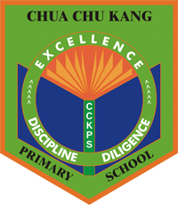

EDUCATION

National University Of Singapore (NUS)
2019 - 2022
2019 - 2022
I will be enrolling in the Business Analytiics course under the School of Computing.
The reason I chose this programme is due to my interest in big data and the relevance of data
science in today's world.
Hwa Chong Institution (JC)
2015 - 2016
2015 - 2016
I studied at Hwa Chong Junior College, where I took my GCE A-levels in 2016, achieving a score of 86.75/90 (AAAB).
Subject Combination: Physics, Chemistry, Mathematics and Economics
Subject Combination: Physics, Chemistry, Mathematics and Economics
Hwa Chong Institution
2011 - 2014
2011 - 2014
My Secondary education was at HCI (High School) where I was part of the Integrated Programme (IP), which
granted direct admission to the Junior College if my results met the requirements. This allowed for more opportunities
to participate in other enrichment activities.

Chua Chu Kang Primary
2005 - 2010
2005 - 2010
I studied at Chua Chu Kang Primary School and took my PSLE in 2010.